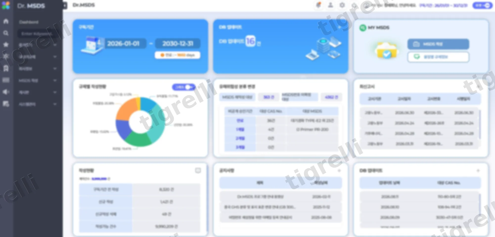
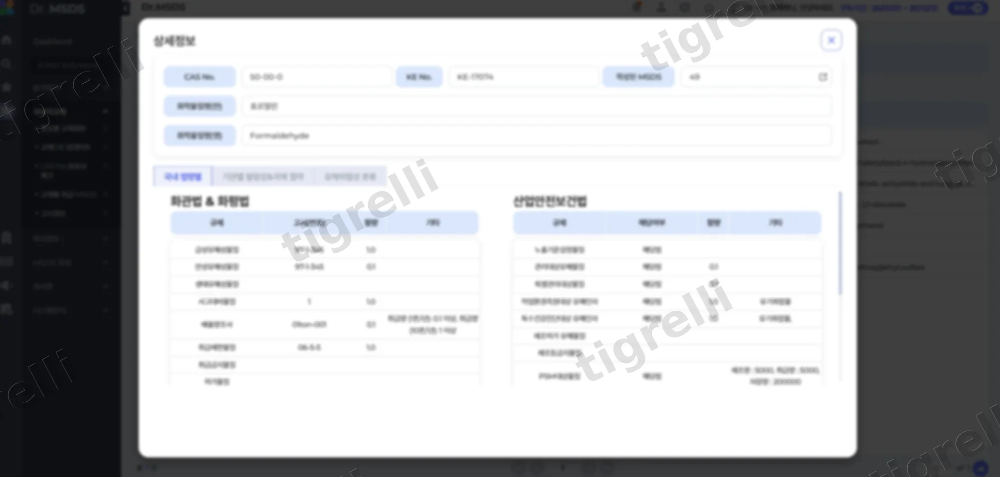
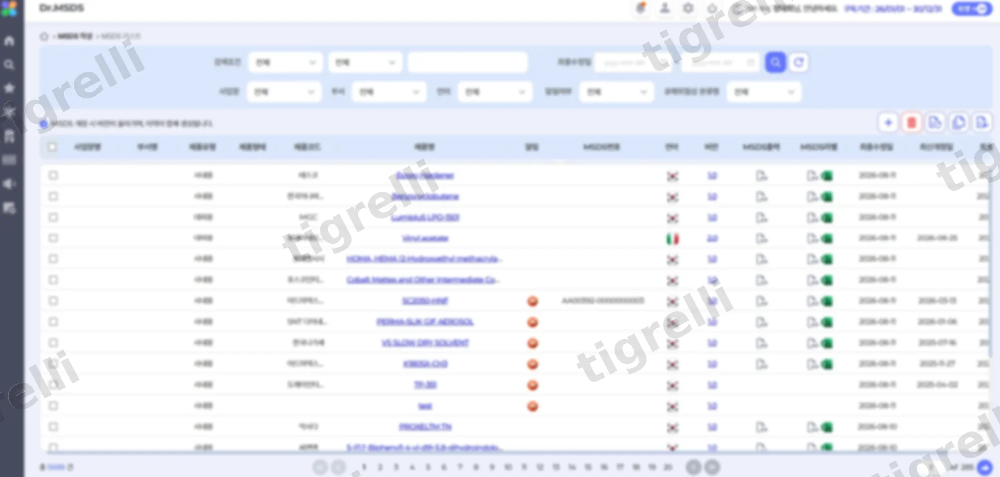
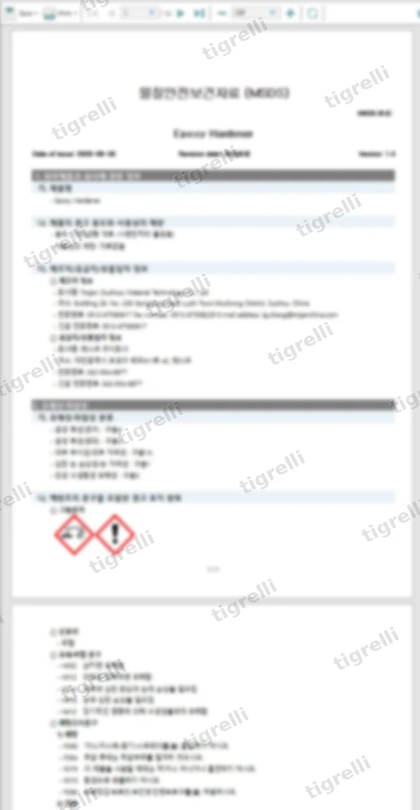

SaaS 운영·PO
Dr.MSDS
규제 데이터 기반 B2B SaaS의 장기 운영과 지속적 고도화

프로젝트 개요
Dr.MSDS는 화학물질 및 국가별 규제 데이터를 활용해 물질안전보건자료(MSDS)의 작성과 관리를 지원하는 기업용 SaaS 솔루션입니다.
약 6년간 서비스 운영을 담당하면서 고객 계약, 규제 데이터 관리, 기능 개선, 품질 검증, 개발 일정 조율 등 제품 운영 전반에 참여했습니다.
단일 구축 프로젝트와 달리, 실제 고객이 지속적으로 사용하는 서비스를 안정적으로 유지하면서 변화하는 규제와 업무 요구사항을 반영하는 것이 핵심 과제였습니다.
핵심 과제 01
규제 변화에 대응하는 운영 프로세스
MSDS 서비스는 관련 법령이나 규제 데이터가 변경될 경우 이를 적시에 반영해야 합니다.
규제 정보가 최신 상태로 유지되지 않으면 고객이 잘못된 정보를 바탕으로 문서를 작성할 위험이 있기 때문입니다.
이를 위해 규제 담당 부서와 협업하여 변경 사항을 확인하고, 시스템에 반영할 내용을 정리한 뒤 개발·검증·패치로 이어지는 운영 프로세스를 관리했습니다.
- 01변경 사항 확인
- 02반영 내용 정리
- 03개발
- 04검증
- 05패치
또한 규제 데이터를 등록하고 관리하는 내부 시스템의 개발과 운영에 참여해 데이터 관리체계를 유지했습니다.
관련 화면

핵심 과제 02
고객 요구사항과 서비스 개선
구독형 서비스는 고객사별 사용 환경과 업무 방식이 다르기 때문에 다양한 개선 요청이 발생합니다.
고객 요청과 서비스 오류를 확인하고, 관련 부서와 함께 요구사항의 적합성과 개선 필요성을 검토했습니다.
검토 결과를 개발 작업으로 구체화하고, 패치 및 고도화 일정을 조율해 제품에 반영했습니다.
이 과정에서 단기적인 고객 요청과 공통 서비스의 유지보수성을 함께 고려하는 경험을 쌓았습니다.
관련 화면

핵심 과제 03
서비스 고도화
장기간 운영 과정에서 여러 영역의 고도화를 추진했습니다.
단순히 화면을 변경하는 것보다 고객의 실제 업무 흐름을 이해하고, 필요한 정보를 적절한 시점에 제공하며, 문서 작성과 관리 과정을 개선하는 데 초점을 맞췄습니다.

핵심 과제 04
다양한 전문 조직과의 협업
서비스 운영에는 개발자뿐 아니라 규제 전문가와 고객사 담당자의 협업이 필요했습니다.
- 규제 전문가정보의 정확성을 검토
- 개발자시스템 구현과 기술적 제약을 검토
- 고객사실제 사용 과정에서 발생하는 요구사항을 전달
주요 성과와 경험
- 약 6년간 B2B SaaS 서비스 운영 및 고도화 담당
- 규제 데이터 등록·관리 시스템 개발 및 운영
- 규제 변경에 따른 패치 프로세스 관리
- 고객 요구사항과 오류 개선 작업 조율
- UI/UX, 알림, 보고서 기능 고도화 추진
회고
제품 운영은 새로운 기능을 추가하는 것만으로 완성되지 않습니다.
서비스의 안정성, 데이터 정확성, 고객 요구사항, 개발 리소스 사이에서 지속적으로 우선순위를 판단해야 합니다.
장기간 동일한 서비스를 운영하면서 제품의 신뢰성과 유지보수성이 고객 경험의 중요한 요소라는 점을 배웠습니다.